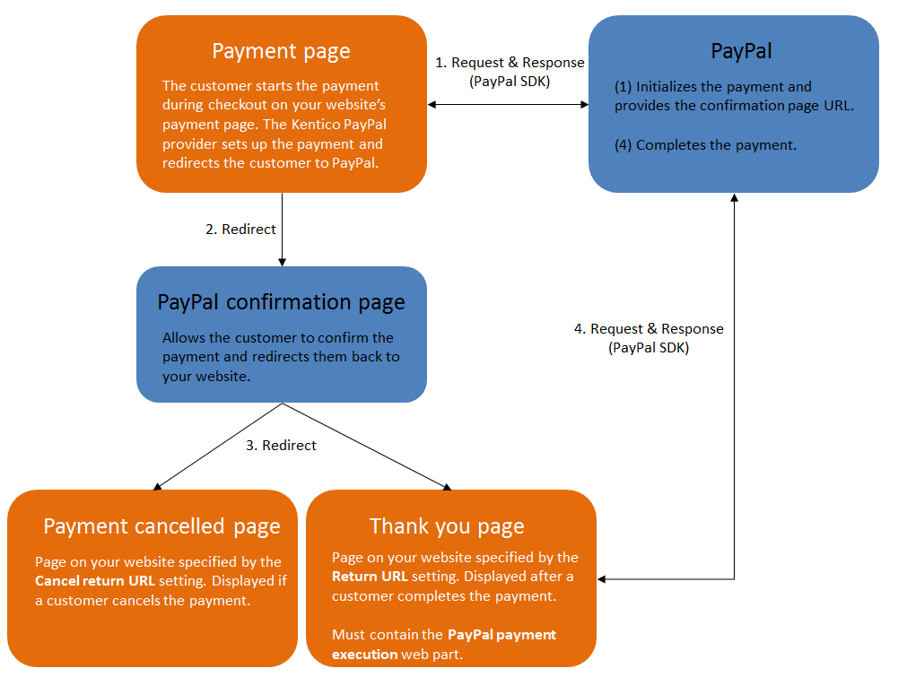
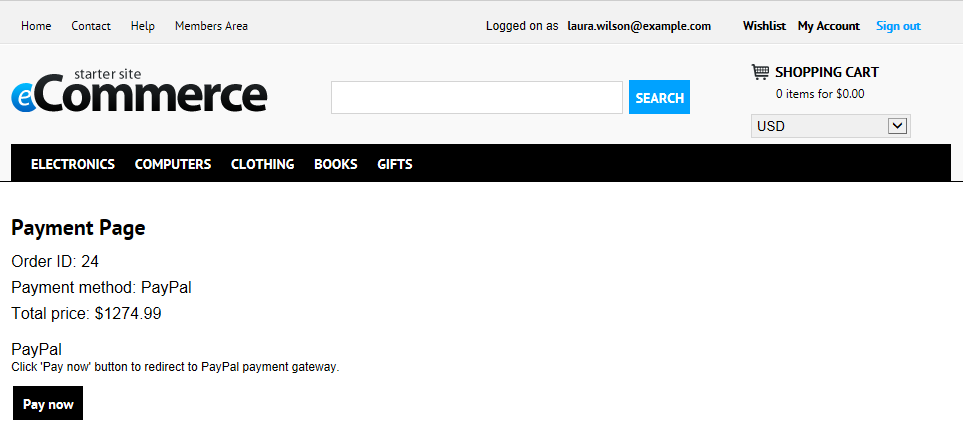

Configuring PayPal
PayPal is one of the most popular on-line payment systems. It allows you to perform money transfers between bank accounts, which are identified by email addresses. Each account is linked to one or more credit cards, e.g. a VISA card, with on-line payment enabled.
While using the Kentico PayPal payment gateway, your on-line store customers can make payments in the following currencies:
United States Dollar (USD)
Euro (EUR)
Pound Sterling (GBP)
Canadian Dollar (CAD)
Australian Dollar (AUD)
Japanese Yen (JPY)
If your currencies are configured to use more than two decimal places, the price is always rounded to two decimal places. Otherwise, the PayPal payment gateway would not allow the payment.
Requirements
To accept PayPal payments on a Kentico website, you need:
A PayPal Business account (you can register on the PayPal website)
A PayPal REST API app associated with your account (create and manage apps in the PayPal Developer Portal)
PayPal payment process

Diagram showing the interaction between a Kentico website and PayPal during payment
-
Configuring PayPal
Setting up PayPal in Kentico
Before your customers can start using the PayPal payment gateway, you need to perform the following configuration:
Find the API credentials (Client ID and Secret) of your REST API app in the PayPal Developer Portal.
Open the Settings application in Kentico.
Navigate to the E-commerce -> Payment Gateways -> PayPal category in the settings tree.
Copy the API credentials into the Client ID and Client secret settings.
Select the Account type associated with the credentials – Sandbox accounts are for test transactions, Live accounts are for real payments on production websites.
For more information about testing of PayPal transactions, see the Sandbox overview in the PayPal documentation.
Specify the return URL values for your website's pages:
Cancel return URL – the URL to which customers are redirected if they cancel payment on the PayPal confirmation page. For example, the URL of a custom Payment canceled page on your website.
Return URL – the URL to which customers are redirected after completing payment on the PayPal confirmation page. For example, the URL of a custom Thank you for your payment page on your website.
Select the Transaction type that you wish to use for payments:
Direct Payment – successful transactions are marked for immediate funds transfer (capture) when orders are placed.
Authorization with Delayed Capture – only authorization occurs during the initial payment (places a hold on the cardholder's available fund limit). The store's administrators need to capture funds manually at a later time by editing orders.
Delayed capture transactions are suitable for stores where products are physically shipped some time after orders are placed.
Note that authorized transactions only remain valid for a limited number of days (depending on the gateway's current policy). If the funds are not captured before the authorization expires, the gateway releases the held amount and the payment cannot be completed.
Open the Store configuration application and select the Payment methods tab.
Ensure that a payment method is registered and enabled for PayPal, with the correct provider class assigned:
Payment gateway provider class:
Assembly name: CMS.Ecommerce
Class: CMS.Ecommerce.CMSPayPalProvider
Additionally, you need to adjust the content of certain pages that are part of your website's checkout process:
Make sure that you have a payment page containing the Payment form web part
Add the PayPal payment execution web part onto the page specified by the Return URL setting. The web part processes the payment URL parameters provided by PayPal and completes transactions.
The system now provides payment via PayPal. Customers who select the PayPal payment method do not need to fill in any additional information during the payment step of the checkout process. After clicking the payment button, the system redirects them to the appropriate PayPal confirmation page to finish the payment.

Using the PayPal payment method during checkout
Custom payment notifications
The default Kentico PayPal provider does not utilize payment notifications – Webhooks or Instant Payment Notification (IPN).
If you require payment notifications for any custom functionality or integrations, you need to configure the related options for your PayPal Business account and implement the required handlers (either within the Kentico web project or a custom project).
For more information, see the Notifications section of the PayPal documentation.